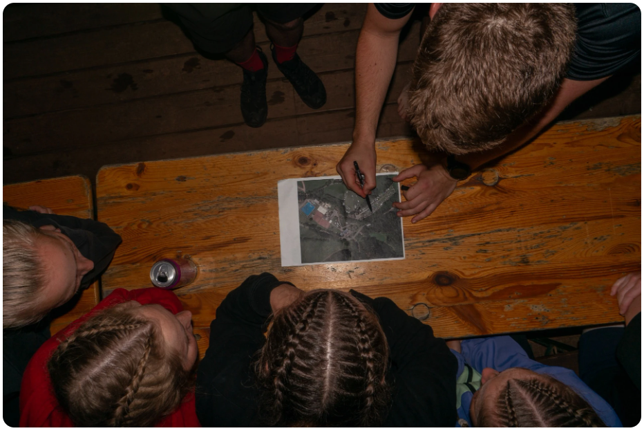

Jedná se o neúplný seznam. Pokud se v seznamu nenacházíte, neznamená to, že s vámi nepočítáme. Seznam byl orientační hlavně pro mě, abych věděl, kdy čekat koho. Pokud v tabulce nejste, kontaktujte mě prosím i s daty.
Tabulka je velmi jednoduchá:
ZELENÁ = budu
ČERVENÁ = nebudu
LOSOSOVÁ = nejisté / na zavolání
MODRÁ = nohejbalista
ORANŽOVÁ = ne-nohejbalista
ŽLUTÁ = invalidní nohejbalisti
Bohužel still in progress...
Nicméně jsou věci, které jsou jisté:
O konkrétnějším programu budete s trochou štěstí a mého volného času navíc informováni.
Už teď víme, že ve čtvrtek v podvečer se běží ALKO-ŠTAFETA pod vedením kolegy Štefana. Tím pádem je to spíš alko-Štefeta.

Důležitá pravidla: chlastá se bublinkaté pití — pivo / Bohemka / cider.
Zbytek důležitého ujasním v následujících dnech.
Hrát se bude i Špaček. Je to upravená varianta Prší se speciálními kartami, povinnými hláškami a tresty. Mezi speciální karty patří například sedmička, osmička, devítka, desítka, spodek, svršek, král a eso. PDF pravidel popisuje i povinné hlášky jako „Špaček“ při poslední kartě nebo „Kule“ při zahrání žaludů.
Stáhnout pravidla hry Špaček